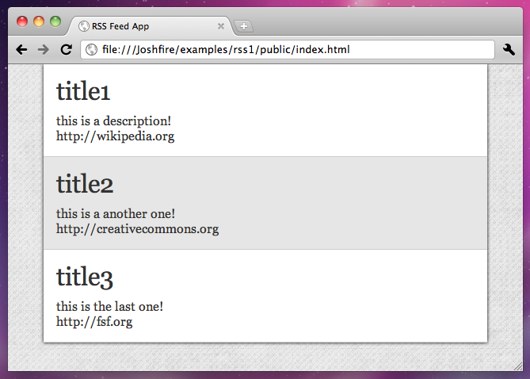

Let's learn by example.
The framework enables you to quickly build applications targeting several platforms including tablets, mobile phones, TVS, etc. Compatible devices depends on which adapters you use (and build).
In this tutorial, we'll walk you through the creation of a basic application displaying a Rss feed.
It will consist of 3 parts, in which we will:
We'll assume you have Joshfire installed already. If not, go to the Installation page.
We do not yet have a command line tool. In the meantime, create the following folders anywhere you like:
joshfire/: the lib/ directory of the frameworkpublic/: for public files
css/: for stylesheetsimg/: for imagessrc/: for main files, the heart of your applicationPlease note that every file and name folders could be changed, this is just a convention among the framework developers.
app.jsNow create a file app.js in src/ directory.
app.js should be the main file of your application. This is where all the base logic should go because this file will be used by all adapters.
Each application needs a Data Tree. It's a structure which will reference all the data your application handles.
In the MVC pattern, it's similar to the Model except that the tree makes all the elements addressable by their "path" and that the framework doesn't impose a fixed schema (This is up to the developers!).
Here is what a Data Tree should look like:
// a dataTree is a structure which references all your data
var dataTree = [
{
// this id will be associated with the path '/news/' in the tree
id: 'news',
//list all the children of the node '/news/'
children: [
// for instance, the path of the array on the following line will be '/news/0'
{id:0, title:'title1', description:'this is a description!', link:'http://wikipedia.org'},
{id:1, title:'title2', description:'this is a another one!', link:'http://creativecommons.org'},
{id:2, title:'title3', description:'this is the last one!', link:'http://fsf.org'}
]
}
];
So if you access the path '/news/1' you will get the following data:
{id:1, title:'title2', description:'this is a another one!', link:'http://creativecommons.org'}
Each application also has an UI Tree: it is a structure which references all the UI elements of your application. It gives you the ability to bind an element to some data referenced by a path in the Data Tree.
It's the View in MVC.
The skeleton of a UI Tree can be defined like this:
var uiTree = [
{
// the unique id which identify the UI Element in the UI Tree
// here the path of the List will be '/newsList'.
id: 'newsList',
// the type of UI Element we want to use (here, a List)
type: List,
// the path of the data (in the data tree) which you wish to bind to this UI Element.
// it will automatically populate the UI Element and update it if the data changes
dataPath: '/news/',
// override the default template for list items
// by default templates use Underscore.js' micro engine
itemInnerTemplate:
'<div class="clearfix">'+
' <h1 class="title"><%= item.title %></h1>'+
' <div class="description"><%= item.description %></div>'+
' <a href="<%= item.link %>"><%= item.link %></a>'+
'</div>'
}
];
See our overview of the framework if you want more information on Joshfire Trees.
// Joshfire.define is a wrapper arround require.js : it allows you to load all your dependencies
// Here we are using:
// - joshfire/app.js the baseclass from which your applications should inherit
// - joshfire/class.js allows you to do inheritance in JS (John Resig style!)
// - joshfire/uielements/list.js the baseclass of a simple List UI element
Joshfire.define(['joshfire/app', 'joshfire/class', 'joshfire/uielements/list'], function(BaseApp, Class, List) {
// this module will return an Object which extends 'BaseApp'
return Class(BaseApp, {
// a unique id which identify your application
id: 'exampleRss',
// the Data Tree we saw earlier
dataTree: [
{
id: 'news',
children: [
{id:0, title:'title1', description:'this is a description!', link:'http://wikipedia.org'},
{id:1, title:'title2', description:'this is a another one!', link:'http://creativecommons.org'},
{id:2, title:'title3', description:'this is the last one!', link:'http://fsf.org'}
]
}
],
// the UI Tree we saw earlier
uiTree: [
{
id: 'newsList',
type: List,
dataPath: '/news/',
itemInnerTemplate:
'<div class="clearfix">'+
' <h1 class="title"><%= item.title %></h1>'+
' <div class="description"><%= item.description %></div>'+
' <a href="<%= item.link %>"><%= item.link %></a>'+
'</div>'
}
]
});
});
If you want more informations on Joshfire.define(), check out our Script loading doc.
public/index.htmlThe second file needed is index.html. It will be the entry point of the application in a browser.
<!DOCTYPE html>
<html>
<head>
<title>RSS Feed App</title>
<link rel="stylesheet" href="css/app.css" />
<!-- In development mode, include the boostrap file of the required adapter: here we target browsers -->
<script data-main="../" src="../joshfire/adapters/browser/bootstrap.js"></script>
</head>
<body>
<script>
// Joshfire.debug enables console.log output and forces refresh of script files in the browser
Joshfire.debug = true;
// Now we require the app.js file we created ...
Joshfire.require(['src/app'], function(App) {
console.log("Code is loaded!");
// ... and instanciate a new application !
// by default the app will start right away and insert itself in the <body>
new App();
});
</script>
</body>
</html>
Just download the following stylesheet in public/css/ folder.
Run it!You can now launch the application in your browser, and it should look like this:
